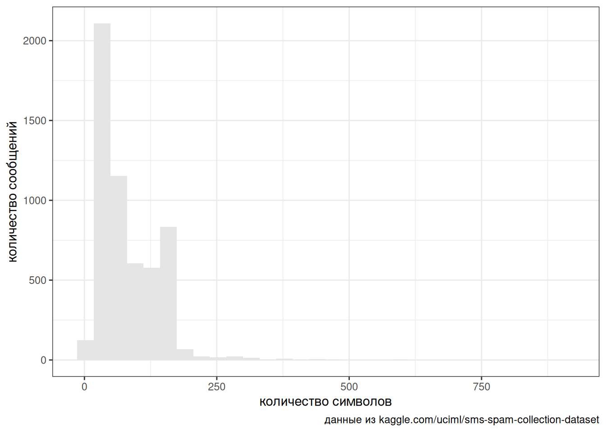
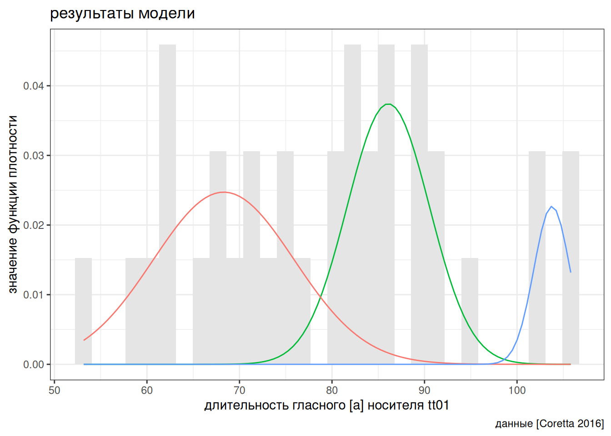
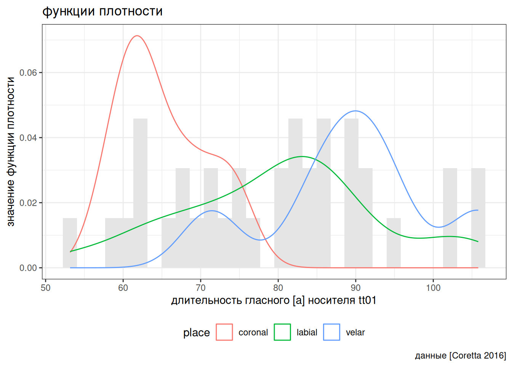

Не все переменные выглядят так же красиво, как распределения из учебников статистики. Для примера возьмем датасет, который содержит спамерские и обычные смс-сообщения, выложенный UCI Machine Learning на kaggle. Посчитаем количество символов в сообщениях:
Rows: 5,572
Columns: 2
$ type <chr> "ham", "ham", "spam", "ham", "ham", "spam", "ham", "ham", "spa…
$ message <chr> "Go until jurong point, crazy.. Available only in bugis n grea…
Rows: 5,572
Columns: 3
$ type <chr> "ham", "ham", "spam", "ham", "ham", "spam", "ham", "ham", "spa…
$ message <chr> "Go until jurong point, crazy.. Available only in bugis n grea…
$ n_char <int> 111, 29, 155, 49, 61, 147, 77, 160, 157, 154, 109, 136, 155, 1…
spam_sms |>ggplot(aes(n_char))+geom_histogram(fill ="gray90")+labs(caption ="данные из kaggle.com/uciml/sms-spam-collection-dataset",x ="количество символов",y ="количество сообщений")

Мы видим два явных горба и, как можно догадаться, это связано с тем, что спамерские сообщения в среднем длиннее и сосредоточены вокруг ограничения смс в 160 символов:
Такого рода данные можно описать при помощи модели смеси разных распределений. Мы сейчас опишем нормальными распределениями и будем использовать пакет mixtools (для смесей нормальных распределений лучше использовать пакет mclust), но, ясно, что семейство распределений можно было бы подобрать и получше.
first <-new_dnorm(seq(1, 750, by =1), mu = spam_length_est$mu[1],sigma = spam_length_est$sigma[1],lambda = spam_length_est$lambda[1])second <-new_dnorm(seq(1, 750, by =1), mu = spam_length_est$mu[2],sigma = spam_length_est$sigma[2],lambda = spam_length_est$lambda[2])which(first > second)
Результат не идеальный, но лучше чем помечать как спам каждое 13 сообщение \(747/(4825+747)\).
В работе (Coretta 2016) собраны данные длительности исландских гласных. Отфильтруйте данные, оставив наблюдения гласного [a] (переменная vowel), произнесенные носителем tt01 (переменная speaker) и постройте следующие графики, моделируя длительность гласного (переменная vowel.dur) смесью трех нормальных распределений. Как вам кажется, насколько хорошо модель смеси справилась с заданием?
number of iterations= 114


3.3 Несколько замечаний
В наших примерах нам была доступна информация о классах (spam/ham, coronal/labial/velar), однако модель смесей распределений как раз имеет смысл применять, когда такой информации нет.
В смеси распределений может быть любое количество распределений.
Модели смеси распределений не ограничены только нормальным распределением, алгоритм можно использовать и для других распределений.
Чаще всего в моделях смеси распределений используются распределения одного семейства, однако можно себе представить и комбинации посложнее.
Модели смеси распределений (mixture models) не стоит путать со смешанными моделями (mixed effects models).
Coretta, Stefano. 2016. “Vowel Duration and Aspiration Effects in Icelandic.” University of York.